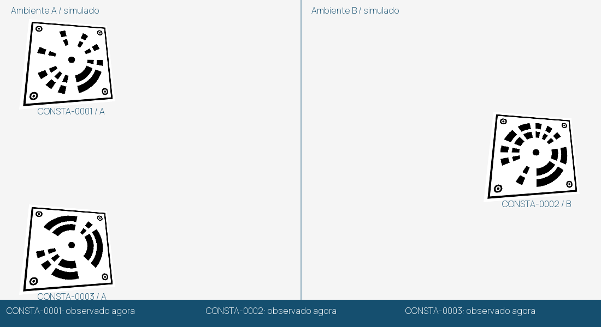
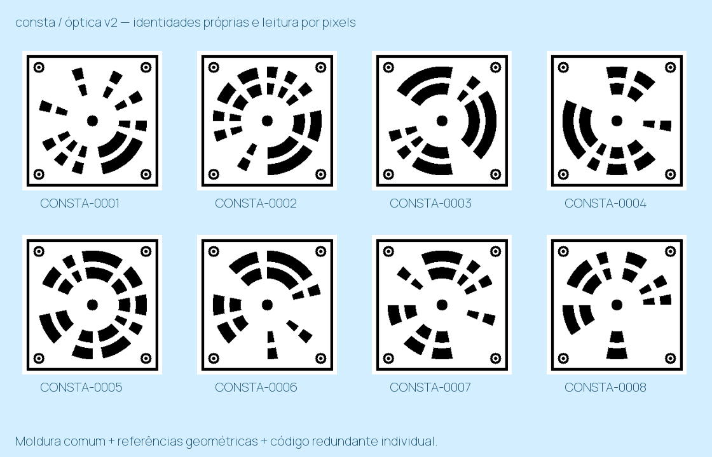

Movimento e leitura automática

Replay pré-calculado a partir de imagens sintéticas. As legendas vêm das leituras do algoritmo. A faixa branca é uma oclusão parcial; quando a etiqueta fica totalmente coberta, a interface indica ausência de leitura atual.
Inspecione uma condição
Referência para avaliar A referência não entra no detector.
Imagem nativa recebida
A referência não entra no detector.
Imagem nativa recebida Saída do detector
Saída do detectorAs imagens não são ampliadas antes de localizar os candidatos; a retificação acontece depois da localização nos pixels.
Bateria principal
Contagens separadas de leituras esperadas, correspondências e identidades extras. Os negativos não têm uma identidade-alvo visível. Sucesso neste conjunto não significa acerto universal.
Validação adversarial separada
Outro responsável gerou novas cenas e parâmetros, usando o mesmo renderizador básico e o detector congelado. As falhas abaixo foram preservadas; não houve ajuste para fazer essa semente passar.
Uma família, identidades diferentes

O código já recebe arquivos de imagem locais, sem internet, pela ferramenta detect_image.py. As verificações apresentadas aqui são computacionais: ainda não houve captura de câmera física nem ensaio de materiais ou compatibilidade clínica.